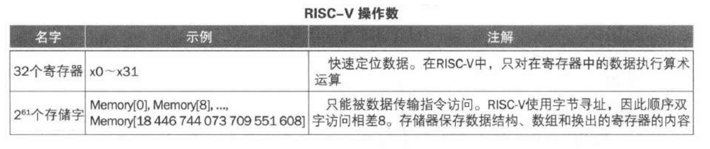
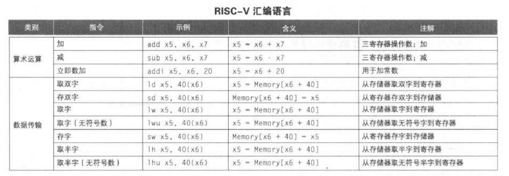
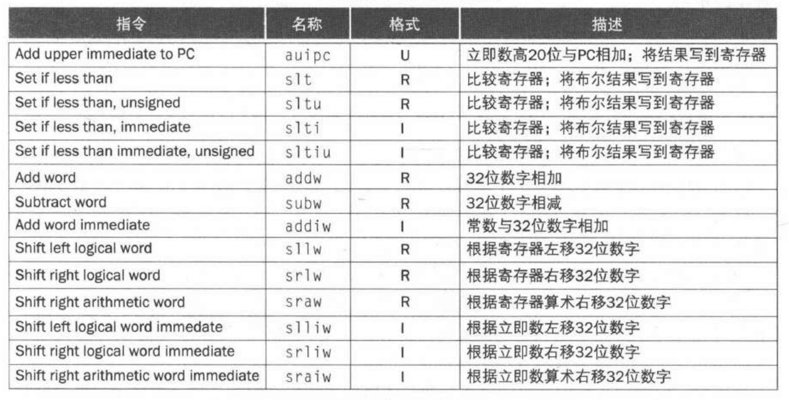
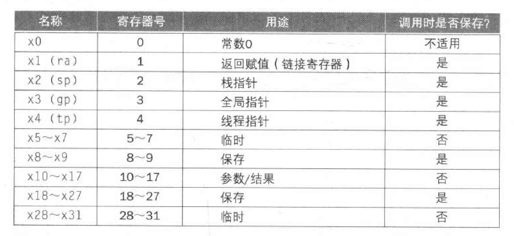
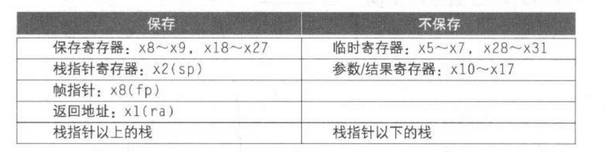
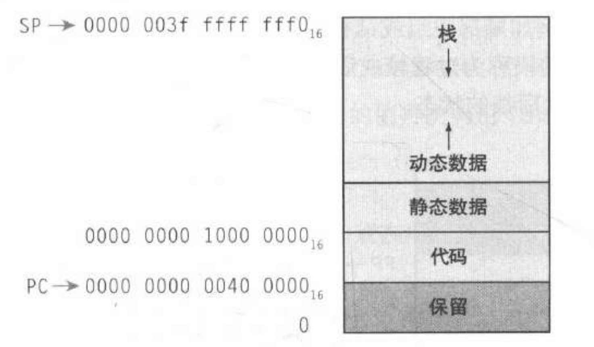
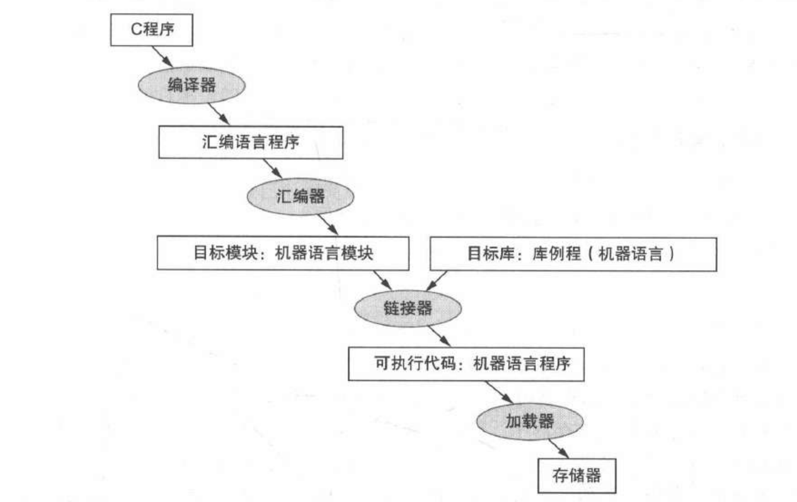
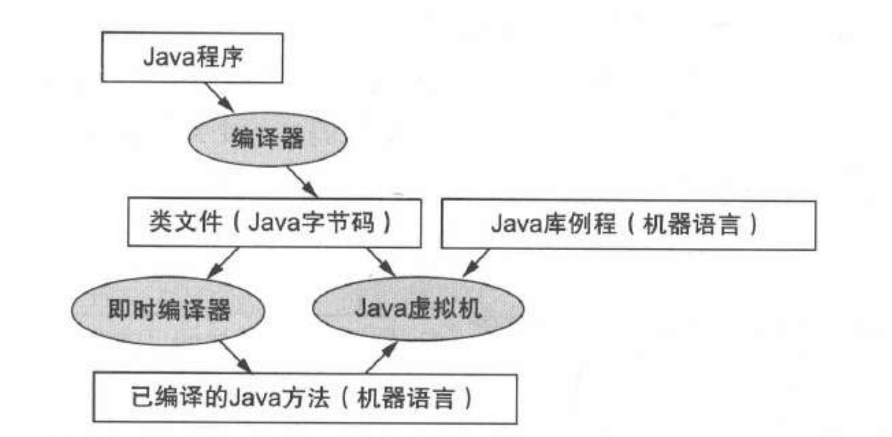
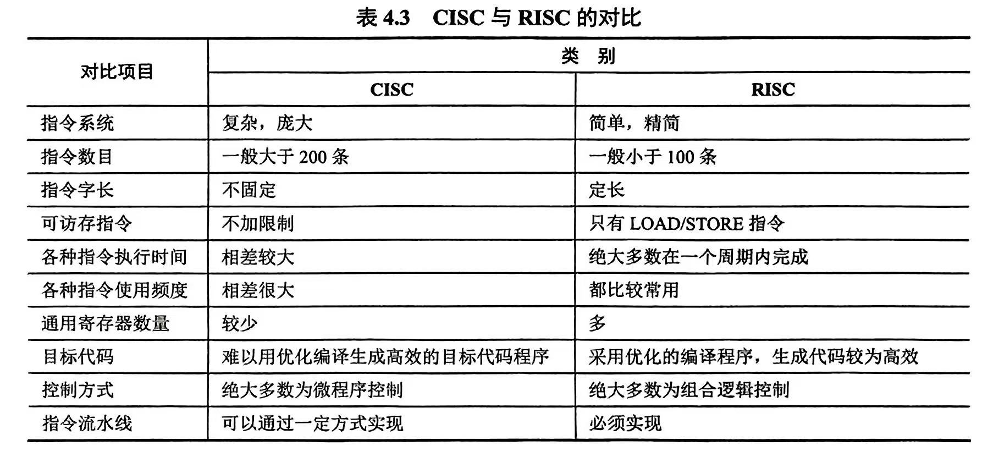

计算机组成知识点整理(2)：指令系统
Last updated on June 6, 2025 pm
这是SJTU-ICE2603《计算机组成》课程的知识点整理系列。本文整理部分为“第2章：指令系统”。
2.1 RISC-V 指令集
- 典型 RISC 架构：定长指令、精简指令集、32个通用寄存器

- 下面两张表是重点


- 以下是剩余的指令（了解）

2.2 操作数
2.2.1 寄存器操作数
- RISC-V 体系中有 32 个 64 位寄存器（字表示 32 位）
- RISC-V 按单字节寻址，连续双字的地址相差 8
- 如下标 8 对应的偏移量是 64
- RISC-V 无对齐限制，即双字的起始地址不一定是 8 的倍数
- 访问寄存器比访问存储器快
- 对存储器数据进行操作需要取数和存数
2.2.2 大端与小端存储
- RISC-V 采用小端模式，即低位字节位于字中的低地址
- 大端模式：高位字节位于低地址
- 例：存放二进制数 0001-0010-0011-0100-0101-0110-0111-1000
- 小端模式：
| 地址 | 0 | 1 | 2 | 3 |
|---|---|---|---|---|
| 数值 | 0111-1000 | 0101-0110 | 0011-0100 | 0001-0010 |
- 大端模式：
| 地址 | 0 | 1 | 2 | 3 |
|---|---|---|---|---|
| 数值 | 0001-0010 | 0011-0100 | 0101-0110 | 0111-1000 |
2.3 数字的表示
- 位有符号整数
- 表示范围：
- 有符号数取负：按位取反再加 1
- 符号扩展（用更多的位表示一个数）：把符号位复制到左边
2.4 指令格式

-
opcode：操作码
-
funct：功能码（扩展操作码）
-
rs：源操作数寄存器
-
rd：目的操作数寄存器
-
S 型指令中，rs1 是基地址寄存器，rs2 是源操作数寄存器
2.5 条件操作
2.5.1 if 语句
- 例：假设 到 保存在 到 中
1 | |
1 | |
2.5.2 循环语句
- 例：假设 在 中， 在 中， 的地址在 中
1 | |
1 | |
- 基本块：只有一个入口（第一个语句）和一个出口（最后一个语句）的指令序列
- 没有分支（除非在末尾）
- 没有分支目标（除非在开头）
2.6 过程调用
2.6.1 步骤及寄存器约定
-
六个步骤：将参数放在过程可以访问到的位置 获取过程所需的存储空间 执行过程中的操作 将结果值放在调用程序可以访问到的位置 将控制返回到初始点
-
寄存器约定：
- ：参数寄存器，用于传递参数或返回值
- ：返回地址寄存器，用于返回到起始点
- ，: 临时寄存器，被调用者不需要保留其中的值
- ，: 保存寄存器，如用到这些寄存器，被调用者需先保存原值，用完再恢复原值

2.6.2 过程指令
- 过程调用：跳转-链接（）
1 | |
- 将下一条指令的地址（PC + 4）保存在 中
- 跳转到目标地址
- 过程返回：寄存器跳转-链接（）
1 | |
- 跳转到 0 + 中保存的地址
- 把 用作目的寄存器（实际 不会被改变）
- 可用于 case / switch 语句
2.6.3 叶过程的汇编代码
- 例：假设 保存在 中， 和 保存临时变量
1 | |
1 | |

- 栈指针（）指向栈顶
- 帧指针（ 或 ）指向帧的第一个双字（通常是保存的参数寄存器）
- 注意，栈向低地址方向扩展
2.6.3 非叶过程的汇编代码
-
调用者需要在栈中保存：返回地址、调用后还需要的参数和临时变量
-
例：
1 | |
1 | |

2.6.4 内存布局

- 一个可执行的程序要包括：指令段、数据段、堆栈段
- 全局指针 指向静态数据区
2.7 寻址模式
2.7.1 大立即数（32位常量）
1 | |
- U 型指令
- 加载 20 位常量到 rd[31:12]，符号扩展 rd[63:32]
- 将 rd[11:0] 清零
2.7.2 分支寻址
- SB 型指令
- PC 相对寻址：目标地址 = PC + 立即数 × 2
- 立即数表示偏移的半字数，即只能跳转到偶数地址
- 跳转范围：
2.7.3 跳转寻址
jal：UJ 型指令，PC 相对寻址jalr：I 型指令，绝对地址- 对于长跳转（32 位地址），
lui将 address[31:12] 写入临时寄存器，jalr将 address[11:1] 加到临时寄存器并跳转到目标位置
2.8 同步
- 两个处理器共享存储器中的某一位置，若不同步，则发生数据竞争
2.8.1 保留加载 / 条件存储机制
预留取数
1 | |
- 从地址 rs1 处取数，保存到 rd
- 对内存地址设置预留
条件存数
1 | |
- 将 rs2 的内容保存到地址 rs1
- 如果从
lr.d之后该位置没有被更改则执行成功，在 rd 中返回 0 - 如果该位置被更改则执行失败，在 rd 中返回非 0 值
2.8.2 原子交换
1 | |
2.8.3 加锁
1 | |
2.9 翻译与启动程序

-
目标模块(.o)的组成：
- 头：描述目标模块的内容
- 代码段：翻译后的指令
- 静态数据段：分配的数据，作用于程序生命周期
- 重定位信息：依赖于程序加载的绝对地址的内容（用于加载程序）
- 符号表：匹配标签名和指令所在地址及外部引用（用于链接模块）
- 调试信息：用于关联到源代码
-
动态链接：仅在调用时链接 / 加载库过程
- 避免了静态链接导致的映像膨胀
- 自动调用新版本的库
-
可移植性：虚拟机 与 即时编译器

2.10 RISC 与 CISC 对比

历年真题
- 二进制补码 10101100 代表的十进制是
- A：-172
- B：+172
- C：-84
- D：+83
- 小端方式32位计算机中数值 -6 的存储方式的描述正确的是
- A：内存位置从低到高存储的十六进制数分别是0xFA、0xFF、0xFF和0xFF
- B：因为其值为负，所以一般采用反码方式存储
- C：内存位置从低到高存储的十六进制数分别是0xFF、0xFF、0xFF和0xFA
- D：内存位置从低到高存储的十六进制数分别是0xFF、0xFF、0xFF和0xFB
Reference
https://blog.csdn.net/weixin_45633061/article/details/117421452
https://gist.github.com/smallaccount101/6324d7c82d103783f21b7cc6da7d0f7c
注：本文中部分图片来自《计算机组成与设计·硬件/软件接口》。
计算机组成知识点整理(2)：指令系统
https://cny123222.github.io/2025/04/01/计算机组成知识点整理-2-：指令系统/